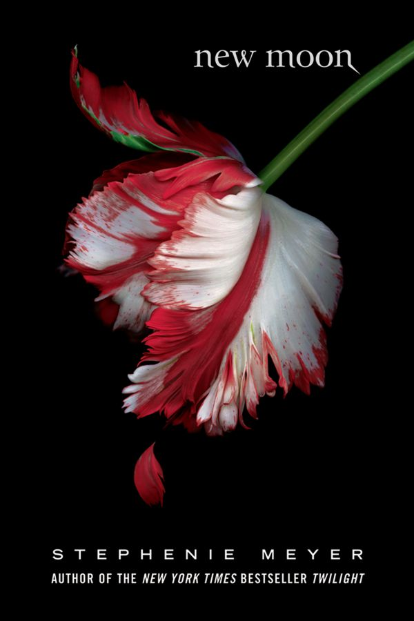

New Moon
by Stephenie Meyer, 2006
- Part of
- The Twilight Saga (#2)
- Description
- From evil vampires to a mysterious pack of wolves, new threats of danger and vengeance test Bella and Edward's romance in the second book of the irresistible Twilight saga.
For Bella Swan, there is one thing more important than life itself: Edward Cullen. But being in love with a vampire is even more dangerous than Bella could ever have imagined. Edward has already rescued Bella from the clutches of one evil vampire, but now, as their daring relationship threatens all that is near and dear to them, they realize their troubles may be just beginning.
Bella and Edward face a devastating separation, the mysterious appearance of dangerous wolves roaming the forest in Forks, a terrifying threat of revenge from a female vampire and a deliciously sinister encounter with Italy's reigning royal family of vampires, the Volturi.
Passionate, riveting, and full of surprising twists and turns, this vampire love saga is well on its way to literary immortality.
It's here! #1 bestselling author Stephenie Meyer makes a triumphant return to the world of Twilight with the highly anticipated companion, Midnight Sun: the iconic love story of Bella and Edward told from the vampire's point of view.
"People do not want to just read Meyer's books; they want to climb inside them and live there." -- Time
"A literary phenomenon." -- The New York Times - Publication
- Little, Brown and Company
- Publication date
- August 21, 2006
- ISBN
- 9780316160193, 0316160199
- Call number
- 813.6